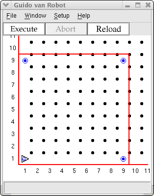

You already know about the if statement. You use it to make a
decision, as in if next to a beeper, pick it up. Sometimes you
have a more complicated decision to make. Guido likes apple pie, but
his Mom doesn't always have it available. She does have cookies all
the time, though. He wants to make a statement like this: "Mom, I'd
like some apple pie, but if you don't have it, then I'd like a cookie."
You can use the if...else... statement to allow this two-way kind
of decision.
It's like the if statement, but we add the optional
else part, providing a different course of action if the
if condition is not met.
The form of the conditional instruction with an else clause is:
if test-condition:
instruction
else:
other-instruction
where instruction can be either a simple instruction (like "move") or an instruction block. Code to pick up a beeper or else just move on could be written as
if next-to-a-beeper:
pickbeeper
move
else:
move
Remember the else part is optional. Use it if it makes sense.
In this project, Guido is going to circumnavigate a bounded world. He does not know the dimensions of the world (but you do, since you will create it). What he does know is that there is a beeper marking every corner of the world except the one where he starts.
Guido starts facing East in the lower left corner. If he's not next to
a beeper, he moves forward, otherwise he picks up the beeper, turns left and
moves. Create a world where it will take exactly 32 moves to circumnavigate.
You can choose the dimensions, but don't tell Guido! Put beepers in three of
the corners (southeast, northeast, northwest). Then use a do
statement (32 times) and an if...else statement to go around the
world.
Your starting world should look somthing like this, though the dimensions may differ:

Copyright © 2003 Roger Frank.